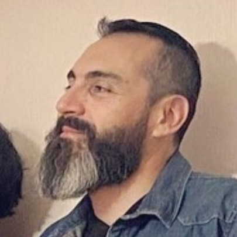

Curriculum Vitae

Eduardo Parra
Resumen
Profesional con estudios superiores en las áreas de Informática y Administración,
con capacidad para trabajar en distintas áreas de una empresa,
con gran capacidad de aprendizaje, responsabildad y adaptabilidad a los cambios.
Datos Personales
|
Competencias
|
- Nombre: Eduardo Javier Parra Astorga
- Lugar de Nacimiento: Antofagasta, Chile
- Fecha de Nacimiento: 04 de Mayo de 1980
- Perfil LinkedIn
|
- Trabajo en Equipo
- Resposabilidad
- Metódico
- Proactivo
|
Formación Académica
|
- Enseñanza Básica: Completa - Escuela Libertador Bernardo O'Higgins
- Enseñanza Media: Completa - Liceo Francisco de Aguirre
- Enseñanza Superior: Completa
- Ingenieria en Gestión Informática - U. Tecnológica INACAP - 2005
- Ingenieria de Ejecución en Administración - U. Santo Tomas - 2015
|